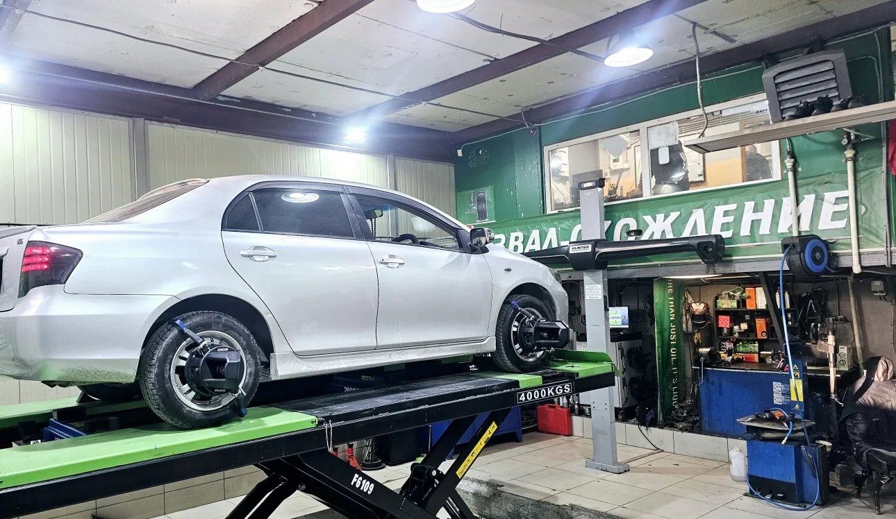
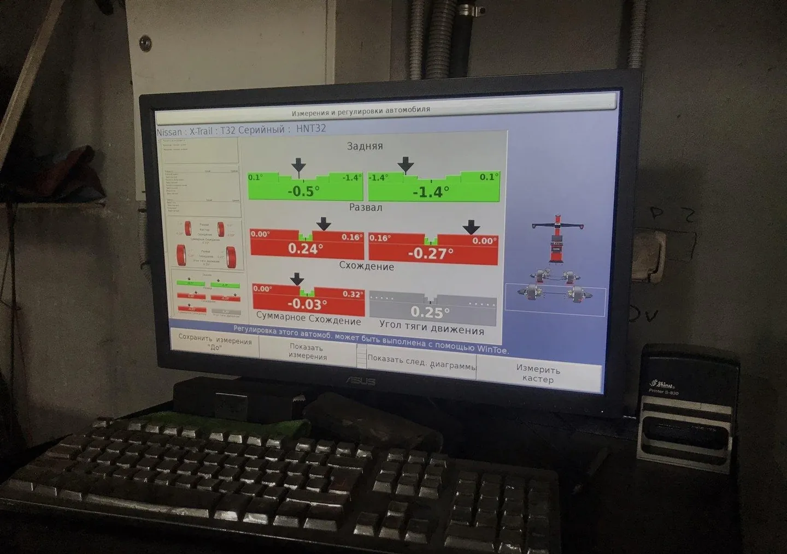
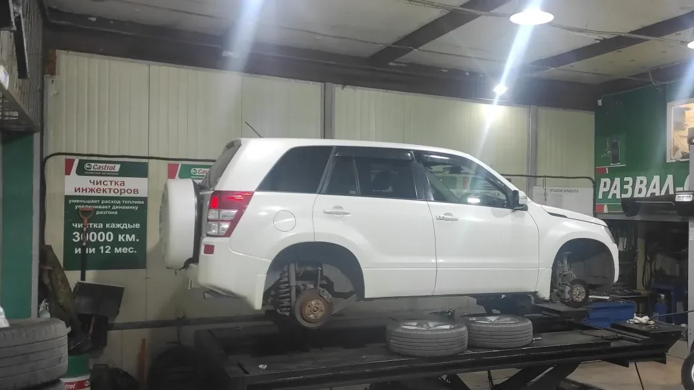
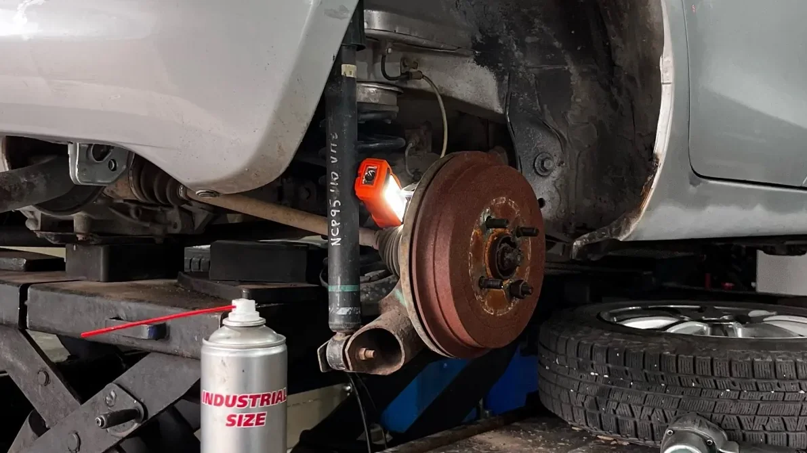
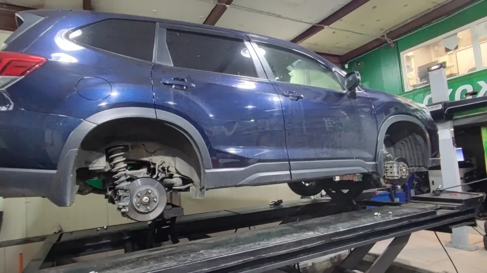
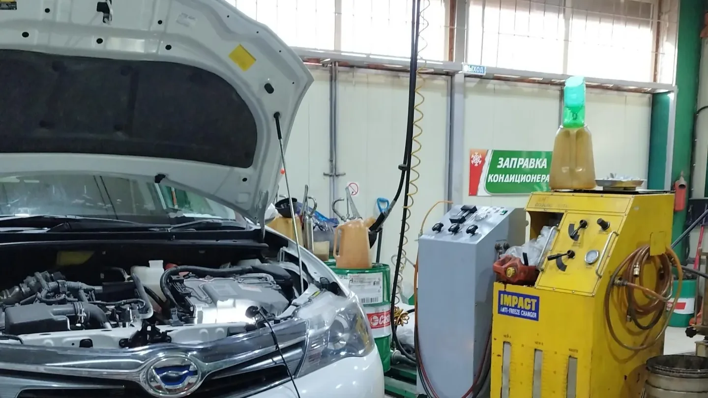

Машина едет ровно
Развал-схождение, шины, тормоза и масло. Воропаева, 10в, Владивосток.

-0,5°схождение, градусы
-10+1
Три угла решают, как едет машина
- Развал
- Наклон колеса, если смотреть спереди. Если он сбит, шина стирается с одного края.
- Схождение
- Куда смотрят колёса, если смотреть сверху. Если сбито, руль стоит криво и шины стираются быстрее.
- Кастер
- Наклон оси поворота, если смотреть сбоку. Он помогает рулю возвращаться в прямое положение.

Хороший стенд для сход-развала, все сделали хорошо, машина едет ровно и без вибраций
Выберите работы
Отмеченное уйдёт в WhatsApp готовым сообщением.

Шиномонтаж, наварка, порезы
Замена колодок
Ходовая, развал-схождение
Масло, жидкости, кондиционерПока ничего не выбрано. Можно просто написать.
Отправить в WhatsAppОтзывы из 2ГИС
Авто 17 лет в одних руках. Это первая СТО, где мне сделали развал без нареканий. Впервые авто не тянет в сторону. 10 из 10. Лучшие!
4,9 в 2ГИС, 284 отзыва. Отзыв Максима Бричука сокращён.
Все отзывы в 2ГИСВоропаева, 10в
Владивосток, 1 этаж. Каждый день с 9:00 до 19:00.
Написать в WhatsApp
+7 914 707-81-52
- Оплата
- картой, наличными, переводом с карты, по QR-коду и через банк
- Ожидание
- Есть Wi-Fi